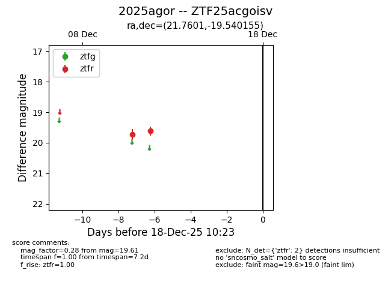
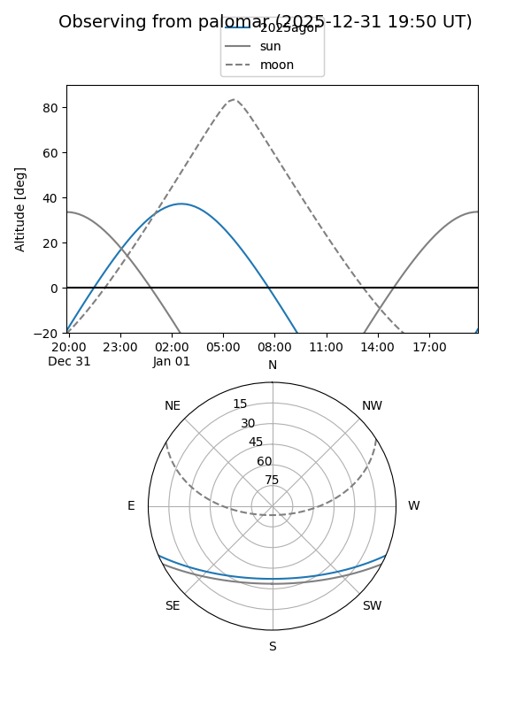

2025agor
Target 2025agor at 2025-12-31 16:59
Aliases and brokers:
FINK:
Lasair:
ALeRCE:
TNS:
YSE:
alt names
ZTF25acgoisv (ztf,fink_ztf)
2025agor (tns,yse)
Coordinates:
equatorial (ra, dec) = 21.7601,-19.54015
equatorial (HMS+DMS) = 01:27:02.43,-19:32:24.56
galactic (l, b) = (171.9041,-78.85557)
Flags:
Photometry:
last ztfr=19.84
3 ztfr detections
Lightcurve

Visibility


Additional plots